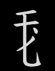

C を用いる要素
①𘤮𘨢𘨡の上半分は CZ で取ります。RM にも見えますが、3画目が左払いで終わらず折れているので R では取れないということの様です。
| CLMXN | 𘃡 | wji¹ | 「作る」（A形） | |
| RXCZL | 𘏘 | rjur² | 「醱酵させる」 | |
| CLA | 𘃞 | ljɨ¹ | 「也（なり）」 | |
| AMCZL | 𘝒 | śjwu¹ | 「毛で編んだ縄」 | |
| LLMCL | 𗄸 | tśhja² | 「威儀」 | |
| TJCZL | 𗚲 | tsjɨ̱r¹ | 「ライチ」 | |
| XVCL | 𗏓 | ljị² | 「審判する」 | |
| CQAI | 𘗣 | du² | 「塔」 |
②𘢫も同様に RM ではなく CS で取ります。2画目の最後は左払いではなく縦棒とみなします。横にスパッと切らずに塊として取ります。
| CSLMP | 𗯧 | khjɨ̱² | 「窓」 | |
| CSLXP | 𗯨 | rjur¹ | 「世界」 | |
| ACSX | 𗧊 | to² | 「生まれる」 |
③𘨘も字首として塊で取り、打鍵は CK です。
| CKBTU | 𘖇 | ljɨj² | 「礼儀」 | |
| CKBA | 𘖈 | ljɨj² | 漢語「領」の音訳 |
④以下の2字の字身は次字首／次字身を CML/S と切るのか CL/MS なのか、Kawasaki (2016) に混乱がみられますが、いずれにせよ打鍵は CLS です。
| CXCLS | 𘂵 | 音不明 | 「意識を失う」 | |
| MTCLS | 𘈱 | mji̱j¹ | 「憂えている」 |
D を用いる要素
① 𘡏は DQ です。D と Q が縦画を共有して重なっています。𘦉 YMDQ の形で現れます。
| YQRK | 𘊭 | tswər² | 「利息」 | |
| YQFJB | 𘊯 | tjwi¹ | 「むせる」 | |
| VEYMQ | 𗃹 | sa¹ | 「驚愕する」 | |
| TBYQP | 𘁯 | dzjị¹ | 「爪」 | |
| NQTBQ | 𘇌 | dzjwi¹ | 「痩せた」 |
② 𘤾 は DJPI, 𘦺 は DQPI です。
| ADJI | 𗣱 | dzjị² | 「覆い」 | |
| ADIN | 𗤯 | dzjị² | 「泣く」 | |
| SHWI | 𗇿 | djij¹ | 「疾病」 | |
| WBDJI | 𗙯 | zjir² | 「背中」 | |
| SSDJI | 𘄙 | tśjij¹ | 「背負う」 | |
| LLADI | 𗆋 | śjwɨ¹ | 「泣く」 |
F, G を用いる要素
① 𘤙は FG で取ります。CG ではありません。縦画は F と G で共有です。
| AFGB | 𗥣 | tsu² | 「立ち上がる」 | |
| XIFGB | 𗬝 | rer² | 「盾」 | |
| TLFB | 𗍩 | xjɨ² | 「災難」 | |
| LFBA | 𗂙 | pha¹ | 「違い」 | |
| LLFBA | 𗆠 | bu¹ | 「降伏する」 | |
| MTFGU | 𗟮 | kji̱r² | 「盗む」 | |
| AFGX | 𗦿 | pjɨj¹ | 「辺、編」漢語からの借用 | |
| FXY | 𘛓 | bji̱j¹ | 「違反する」 |
② 𘢻は GF で取ります。「土」にフと縦画の F の輔助字形が追加されているという解釈の様です。
| GFSOX | 𗳀 | mej² | 「柔らかい」 | |
| GFSMB | 𗳁 | mej² | 「贈る」 | |
| GFNLP | 𗳂 | rjur² | 「駿馬」 |
③ 𘡓𘢣は FM で取ります。
| FMXLX | 𗗐 | ˑjiw² | 「生命」 | |
| FMBUN | 𗗏 | pjwɨ̱r¹ | 「いさめる」 | |
| FMBUA | 𗭸 | piej² | 「結合する」 |
④ 𘧓は FJDQ, 𘧒 は FLVX で取ります。
𘨼𘣆 ZDQ, ZLV との違いは縦棒が上に突き抜けているかどうかです。
| AFJQ | 𗤳 | mə² | 「姓、氏」 | |
| FQA | 𘓁 | ljɨ̣¹ | ①接続詞「そして」、②助詞「も」、③動詞の譲歩節接頭辞 | |
| FQO | 𘕿 | ɣa² | 格助詞「に、で」（場所） | |
| FQRX | 𘓆 | ljɨ̣¹ | 「論ずる」 | |
| EFJQ | 𗊥 | mə² | 「すべる」 | |
| FQMST | 𘓃 | ljɨ̣¹ | 「殺す」 | |
| FQLML | 𘓄 | rjur¹ | 「吉祥の」 | |
| FXMR | 𘒿 | lwe¹ | 「妨げる」 | |
| FXMSB | 𘓀 | lwe¹ | 「忘れる」 |
⑤ 𘢺 は FS です。画が加わると𘥆 FSY になります。
| RXFSS | 𘏺 | tar¹ | 「踏む」 | |
| YBFSY | 𘛁 | bji̱j² | 「行列」 | |
| FYSQB | 𘆙 | gjij² | 「薄暗い」 | |
| FYTAL | 𘆛 | njạ¹ | 「よこ糸」 |
⑥ は GPI です。G と P が縦画を共有しています。
| RXGPI | 𘏂 | kjwij¹ | 「痙攣」 | |
| HWGPI | 𘉩 | ljiw² | 「引っ張る」 | |
| MXFGI | 𘚉 | ˑjo̱r¹ | 「編む」 | |
| RJLVI | 𘖣 | kiər¹ | 「心がおだやかな」 |